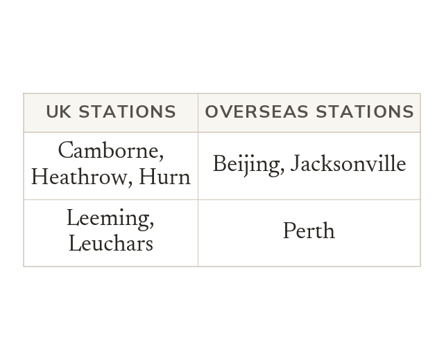
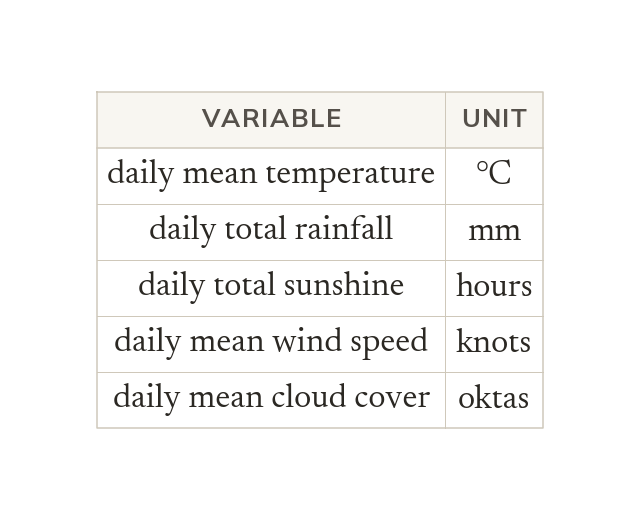
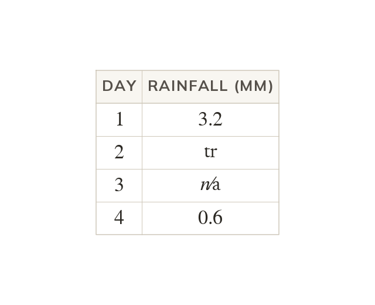
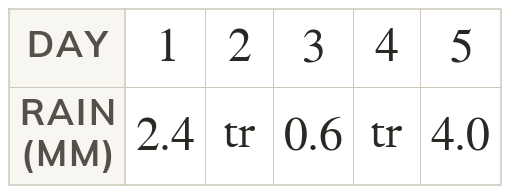
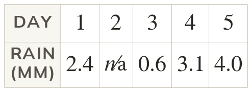
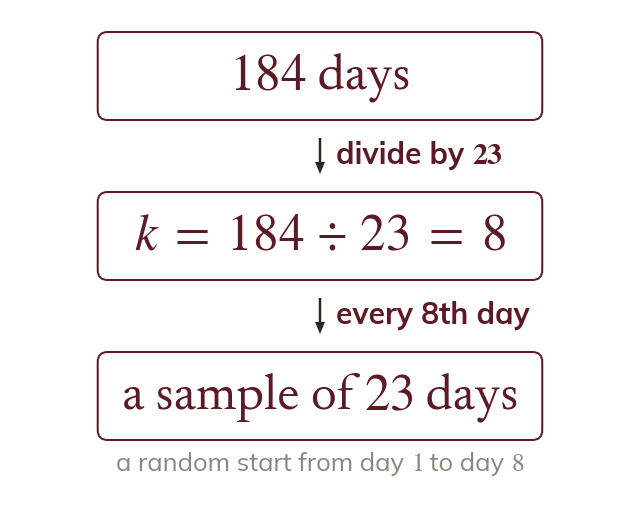
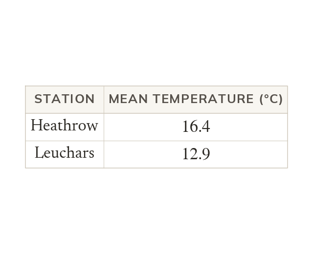
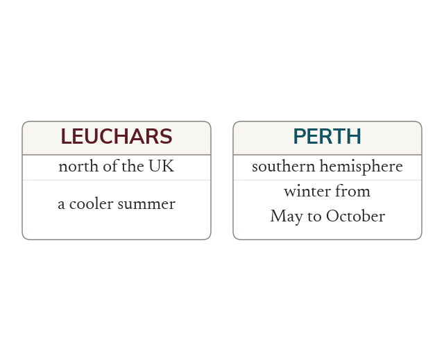

What it holds
The large data set is daily weather at stations, in the UK and overseas. It covers May to October in and
The exam expects students to know the large data set, its stations, units and codes, and to have worked with it. This lesson reads and cleans its values and then samples it to compare stations, which the next chapter does with measures of location and spread.
Work down the page at your own pace. Write every answer in your book first, then click to check it.
Read each card, then follow the worked examples one step at a time.

The large data set is daily weather at stations, in the UK and overseas. It covers May to October in and

Each variable has its own unit. Wind speed is in knots, and cloud cover is in oktas, eighths of the sky.

A trace of rain, under mm, is recorded as tr and taken as
A value of n/a means there are no data, so that day is left out.


Pick an answer. If it's wrong, the feedback tells you which mistake it was.
Write the blanks in your book first, then tap each one to check.
Read each card, then follow the worked examples one step at a time.

Each station has days of data a year, from May to October. A systematic sample takes every kth day from a random start.

Compare a measure, such as the mean, for two stations or two years. Then give a reason in context.

Leuchars is in the north of the UK, so its summer is cooler. Perth is in the southern hemisphere, so May to October is its winter.
Pick an answer. If it's wrong, the feedback tells you which mistake it was.
Write the blanks in your book first, then tap each one to check.
Finished? Next lesson: S2.1 Measures of Central Tendency.
For each skill, tap the one that is true for you today. Your Revise pages start with anything you mark Not yet.
Your ratings are saved on this device only.
Log in, then search for a code to practise that skill.